I’ve build up a portfolio that showcases my best work - Whether it’s in web, print, animation, 3D modelling or brand identity.
Website about food deconstruction.
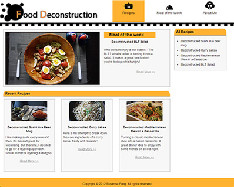
My portfolio version-1 using WordPress.
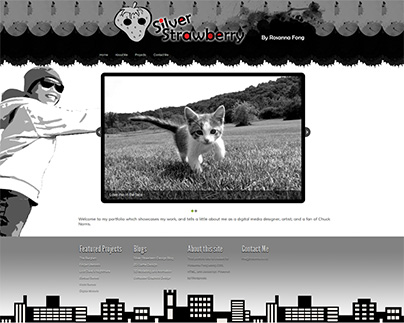
Food deconstruction logo: design version-1.
Food deconstruction logo: design version-2.
Food deconstruction logo: design version-3.
Designs for Getdone Plumbing's web deals.
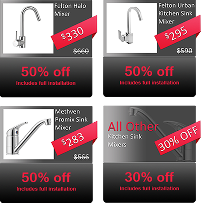
Website for Restaurant88. Visit http://restaurant88.co.nz
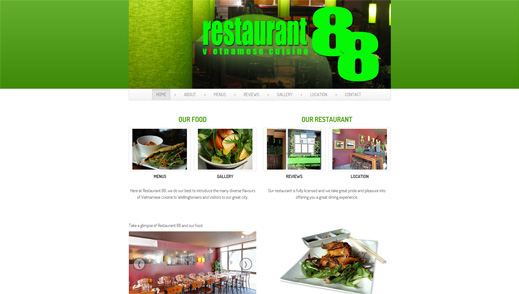
Tumblr web theme for Victoria's Broadcasting Club 88.3FM.
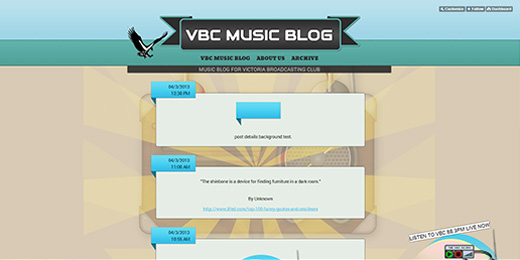
My portfolio version-2 using Twitter Bootstrap.

Black and white logo designs for my first portfolio.

Marketing design for Getdone Plumbing's T.V. advertisement.
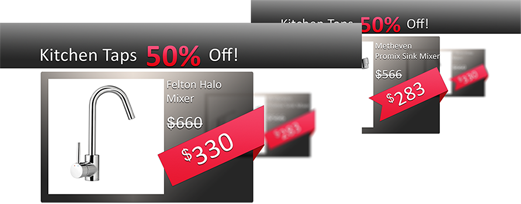
Business card designs for the staff at Plumbing Express.
Stamp designs representing my design manifesto.
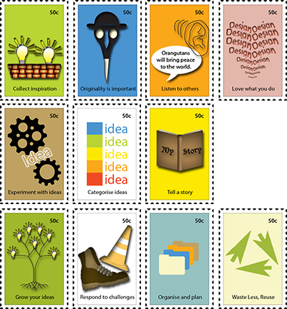
Design for the Plumbing Express pamphlet.
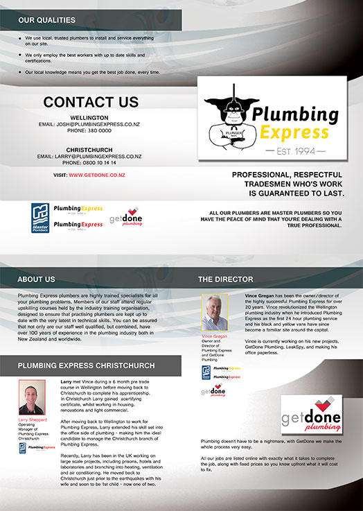
Stamp designs representing my design manifesto.
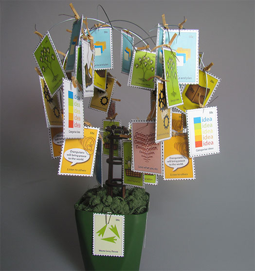
Clip from "The Burglary" animation.
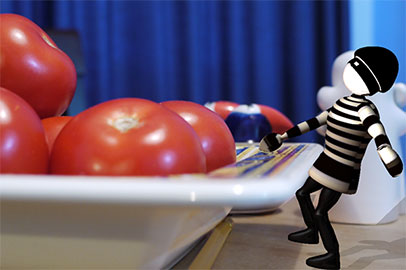
3D abstract models.
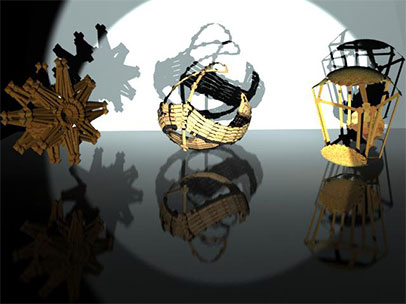
My interpretation of Argia from Calvino Italo's "Invisible Cities".
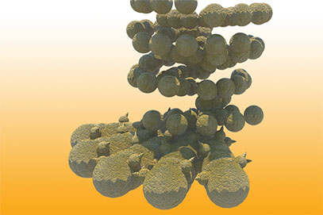
Popcorn interactive experiment on the Nexus 7.
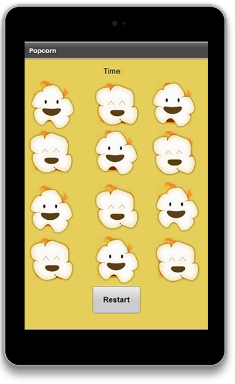
Windchimes interactive experiment on the Nexus 7.
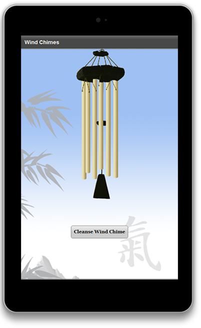
Character designs for a group project.
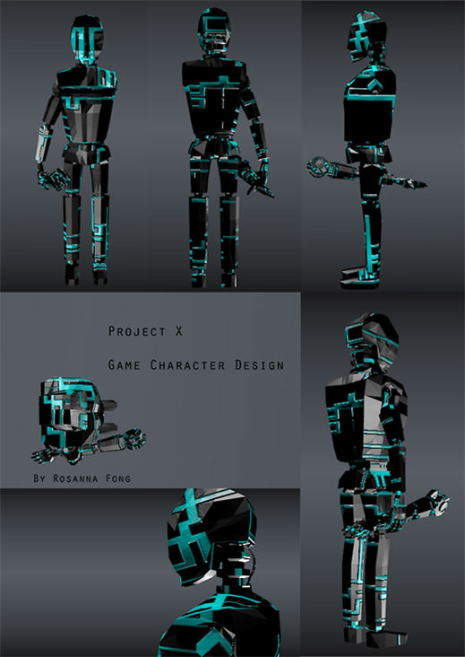
My space cyborg.
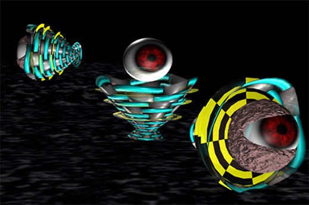
"The Burglary" video
"Tunnel of dreams" video
Shaking jester interactive experiment on the Nexus 7 .
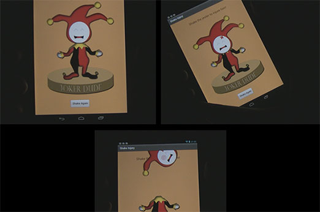